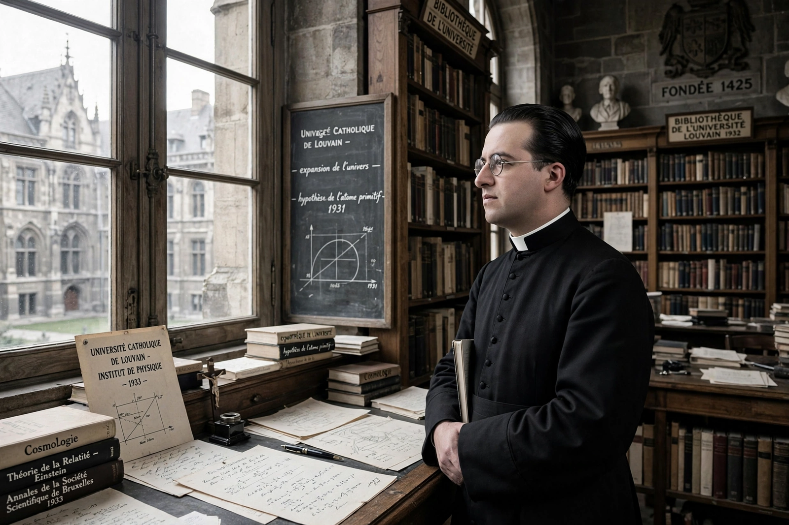

Georges Lemaître

Georges Henri Joseph Édouard Lemaître (17 July 1894 – 20 June 1966) was a Belgian Catholic priest, theoretical physicist, mathematician, astronomer, and professor of physics at the Catholic University of Leuven. He was the first to theorise, in 1927, that the recession of nearby galaxies can be explained by an expanding universe, which was observationally confirmed soon afterwards by Edwin Hubble. He derived the law of expansion commonly known as Hubble's law (renamed the Hubble–Lemaître law by the International Astronomical Union in 2018), and he was the first to propose in 1931 what became known as the Big Bang theory of the origin of the universe, calling it the "hypothesis of the primeval atom".
| Born | 17 July 1894, Charleroi, Belgium |
|---|---|
| Died | 20 June 1966 (aged 71), Leuven, Belgium |
| Known for | Expansion of the universe; Big Bang theory; Lemaître coordinates |
| Awards | Francqui Prize (1934); Eddington Medal (1953) |
Life
Lemaître was born in Charleroi and studied civil engineering at Leuven before serving as an artillery officer in the Belgian army during the First World War. After the war he studied physics and mathematics, earning his doctorate in 1920, and was ordained a priest in 1923. He spent time at Cambridge, where he worked with Arthur Eddington, and at Harvard and MIT, where he became acquainted with the observations of galaxy redshifts by Vesto Slipher and Edwin Hubble.
The expanding universe
In a 1927 paper published in French in a Belgian journal, Lemaître presented a solution of Einstein's equations describing an expanding universe and estimated the rate of expansion from the available galaxy data. The paper attracted little attention until Eddington arranged an English translation in 1931; in that translation, the passages containing Lemaître's own estimate of the expansion rate were omitted, a fact clarified by later scholarship, which showed Lemaître had made the changes himself. In 1931 he proposed that the universe began from a single quantum — the "primeval atom" — whose disintegration produced all of space and time, an idea that anticipated the modern Big Bang theory developed further by George Gamow and others.
Later work and honours
Lemaître also worked on cosmic rays and on computational methods, and he served as president of the Pontifical Academy of Sciences from 1960 until his death. He died in Leuven in 1966, shortly after learning of the discovery of the cosmic microwave background radiation, which strongly supported his theory of a hot, dense early universe. In 2018 the International Astronomical Union voted to rename Hubble's law the Hubble–Lemaître law in recognition of his priority.